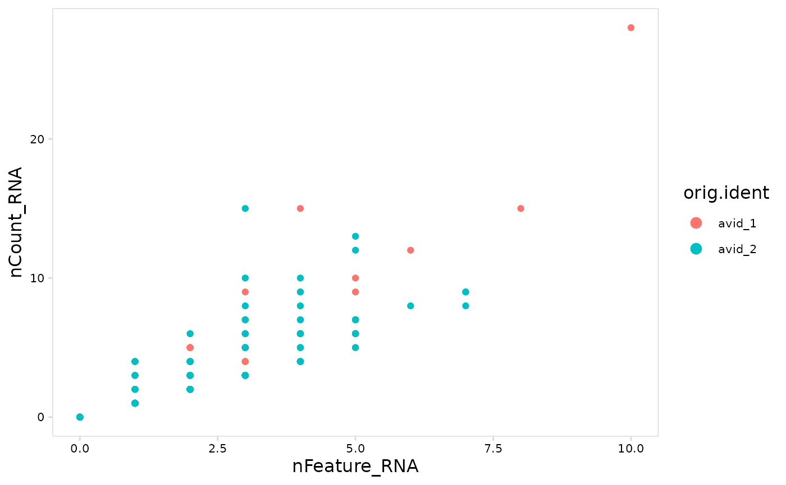
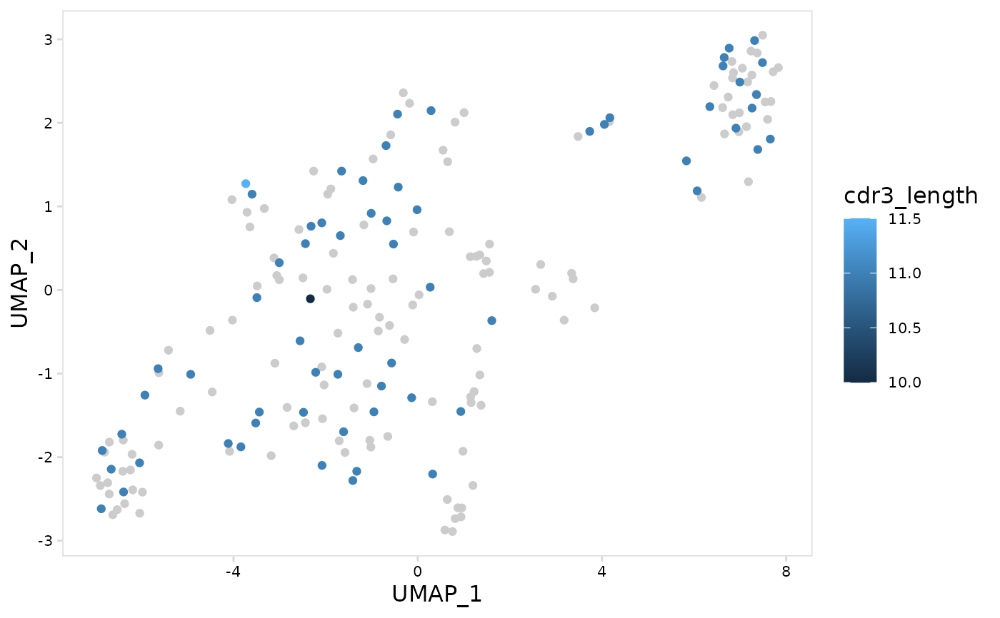
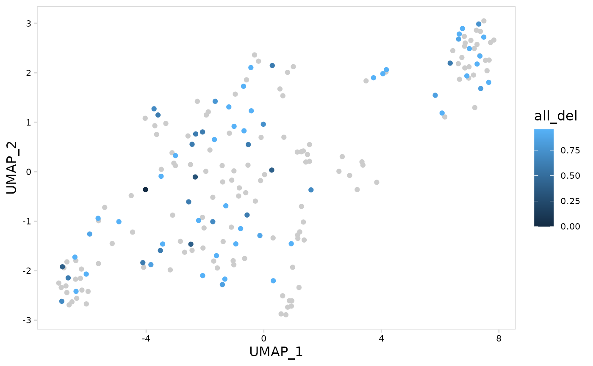
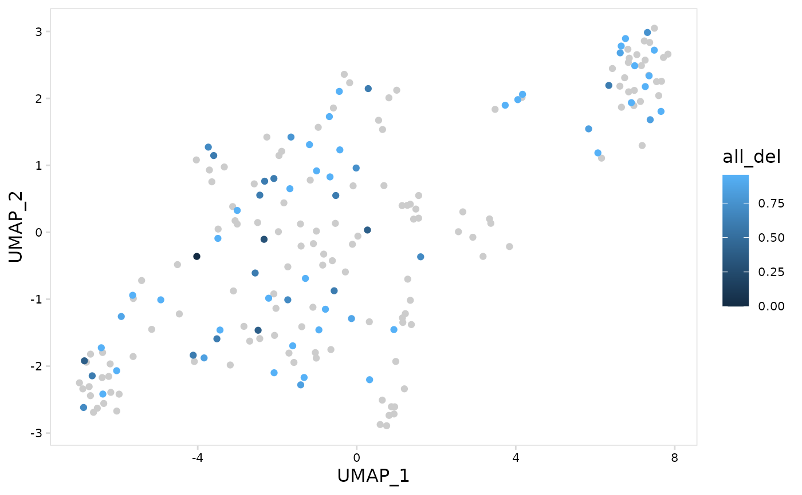

Create a scatter plot with cells colored based on the provided feature. This can be used to create dimensional reduction plots (e.g. UMAP, tSNE, PCA) or to compare different cell attributes (e.g. CD4 vs CD8 expression).
plot_vdj_feature() allows per-chain V(D)J data to be summarized and plotted for each cell.
plot_features(input, ...)
# S3 method for default
plot_features(
input,
feature,
x = "UMAP_1",
y = "UMAP_2",
plot_colors = NULL,
plot_lvls = NULL,
min_q = NULL,
max_q = NULL,
na_color = "grey90",
...
)
# S3 method for Seurat
plot_features(
input,
feature,
x = "UMAP_1",
y = "UMAP_2",
data_slot = "data",
plot_colors = NULL,
plot_lvls = NULL,
min_q = NULL,
max_q = NULL,
na_color = "grey90",
...
)
plot_vdj_feature(input, ...)
# S3 method for default
plot_vdj_feature(
input,
data_col,
x = "UMAP_1",
y = "UMAP_2",
summary_fn = NULL,
chain = NULL,
plot_lvls = NULL,
min_q = NULL,
max_q = NULL,
na_color = "grey90",
chain_col = "chains",
sep = ";",
...
)
# S3 method for Seurat
plot_vdj_feature(
input,
data_col,
x = "UMAP_1",
y = "UMAP_2",
data_slot = "data",
summary_fn = NULL,
chain = NULL,
plot_lvls = NULL,
min_q = NULL,
max_q = NULL,
na_color = "grey90",
chain_col = "chains",
sep = ";",
...
)Arguments
- input
Single cell object or data.frame containing V(D)J data. If a data.frame is provided, the cell barcodes should be stored as row names.
- ...
Additional arguments to pass to ggplot2, e.g. color, fill, size, linetype, etc.
- feature
Variable to use for coloring points
- x
Variable to plot on x-axis
- y
Variable to plot on y-axis
- plot_colors
Vector of colors to use for plotting
- plot_lvls
Levels to use for ordering feature
- min_q
Minimum quantile cutoff for color scale.
- max_q
Maximum quantile cutoff for color scale.
- na_color
Color to use for missing values
- data_slot
Slot in the Seurat object to pull data
- data_col
meta.data column containing V(D)J data to use for coloring cells
- summary_fn
Function to use for summarizing values for each cell, possible values can be either a function, e.g. mean, or a purrr-style lambda, e.g. ~ mean(.x, na.rm = TRUE) where ".x" refers to the column. If NULL, the mean will be calculated for numeric values, non-numeric columns will be combined into a single string.
- chain
Chain(s) to use for filtering data before plotting. If NULL data will not be filtered based on chain.
- chain_col
meta.data column containing chains for each cell
- sep
Separator used for storing per-chain V(D)J data for each cell
Value
ggplot object
See also
summarize_vdj() for more examples on how per-chain data can be
summarized for each cell
Examples
# Create UMAP with cells colored based on sample name
plot_features(
tiny_so,
feature = "orig.ident"
)
# Compare UMI counts for each cell with number of genes detected
plot_features(
tiny_sce,
feature = "orig.ident",
x = "nFeature_RNA",
y = "nCount_RNA"
)

# Plot average CDR3 length for each cell for light chains
plot_vdj_feature(
vdj_so,
data_col = "cdr3_length",
summary_fn = mean,
chain = c("IGK", "IGL")
)

# Plot median number of insertions for each cell
plot_vdj_feature(
vdj_sce,
data_col = "n_insertion",
summary_fn = stats::median
)
 # Using a lambda function to summarize values
# use ".x" to refer to values in the column
# this calculates the mean number of deletions for each cell and
# log10-transforms the result
plot_vdj_feature(
vdj_so,
data_col = "n_deletion",
summary_fn = ~ log10(mean(.x) + 1)
)

# Using a lambda function to summarize values
# use ".x" to refer to values in the column
# this calculates the mean number of deletions for each cell and
# log10-transforms the result
plot_vdj_feature(
vdj_so,
data_col = "n_deletion",
summary_fn = ~ log10(mean(.x) + 1)
)
